The entrance to the restaurant was a long, dark hallway lit up by tall purple and red neon lights, set in slightly slanted walls. Just as we were wondering "where's the entrance?", a hidden door slid open to reveal an immaculately dressed maître d' and the gorgeous, modern lobby. It certainly set the tone for the meal to come—full of surprises, fiercely modern, but always rooted in hospitality and beauty. When we were shown to our table, a beautiful vase was our centerpiece, filled with sprigs of rosemary, mint, and a long curl of orange zest. Suspended above our heads, on a clear thread, were two beautifully arranged shisito peppers and two purple and white orchid blossoms. Our waiter arrived, told us to sit back and relax (we weren't given a menu), and the meal began.
First, our sommelier poured cava into the centerpiece, which turned out was a decanter, and swirled it to remove all the bubbles. While it infused, we were each served little champagne saucers, with what looked like white crystals on the bottom, and a beautiful orange sphere on top, topped with salt and micro basil.
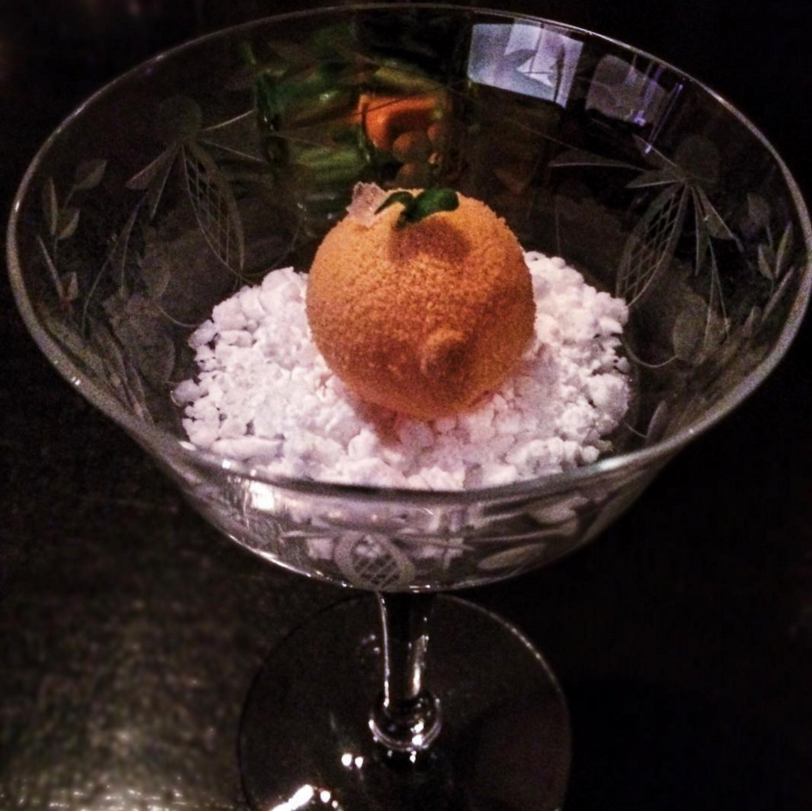When we popped the sphere in our mouth it cracked open with an audible pop, and the juice inside (satsuma) gushed out. The shell was white chocolate, and the dish was infused with saffron and star anise. Next, our waiter poured the now-infused cava into the champagne saucer. It turned out the crystals were liquor (brandy and Pacharán, a Spanish sloe liqueur), which melted into a lovely cocktail (making the drink stronger as they melted).
Next, the waiter dropped three little coasters on the table, each with a photo of a tapas. Then, small glass monocles were placed on top of each photo, each holding a single bite. One bite was "patatas bravas", a creamy, garlicky cube covered in paprika potato chip crumbs, with a dot of aioli. One was "bocadillo", something close to a pâté texture with bits of iberico ham and crunchy manchego. Finally (my favorite) was a little jello-ish anchovy and garlic flavored cube, filled with intense, briny guindilla (pickled pepper) juice.
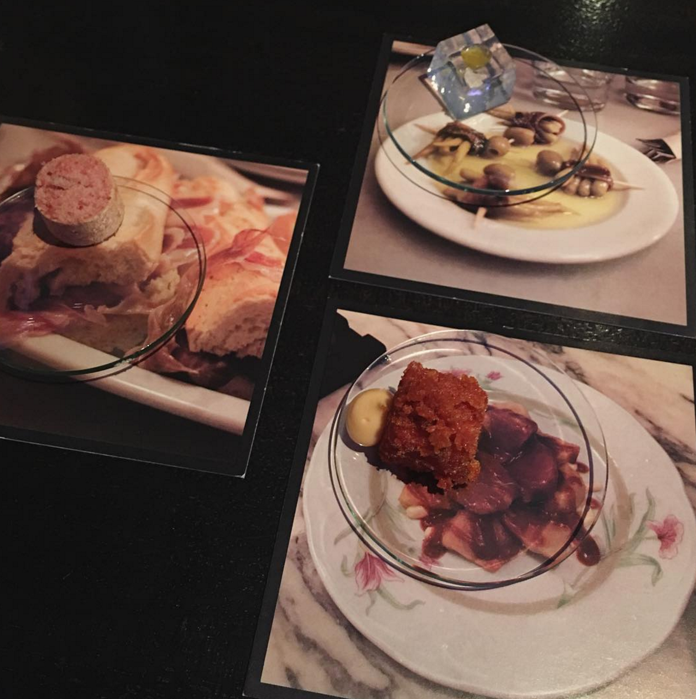The next course was an artfully plated artic char. There were way too many components on the plate to count or taste individually, which exemplifies the concept of "flavor bouncing" ("arranging, mixing and matching complementary foods to a central ingredient"). The main sauce on the bottom of the plate was a uchiki kuri squash coconut curry. There were also many little dots of sauce which included things like banana, pickled shrimp, and I forget what else. There was also a dusting of pumpkin seed butter which had been frozen in liquid nitrogen and shattered, plus char roe. On top, was a "net" of crispy squash, and crunchy micro greens. It was an astounding dish, every bite was different, and it was (as clichéed as this sounds) far greater than the sum of its parts.
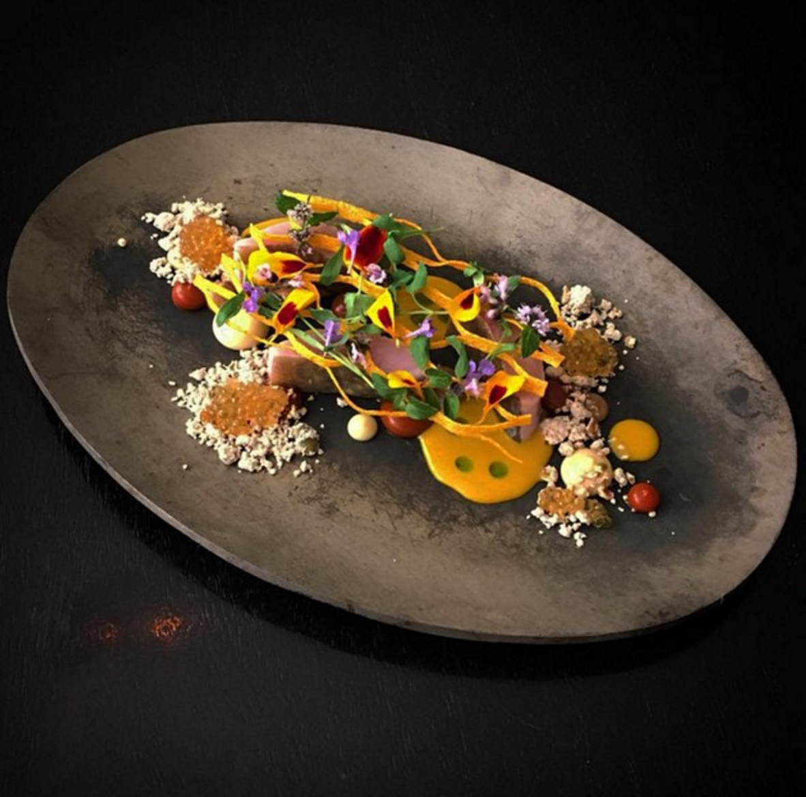The waiter then brought out four thick slabs of concrete, with what looked like tiny sheets of concrete stacked around some hidden food. He told us that outside Chicago restaurants serve food from the farmyard outside, so at Alinea they serve concrete and graffiti from the alley. The edible concrete was made from ash and magic, and underneath there were a variety of preparations of matsutake mushrooms (thin sliced raw, thin sliced fried, and a puree of matsutake, water, and magic with the texture of mayonnaise), pickled shallots, and sherry sauce. The waiter "spray painted" a parsley sauce over the plates. It was a lovely dish—the "concrete" absolutely disappeared in the mouth, and the mushroom flavor was wonderfully intense, with all those beautiful complements.
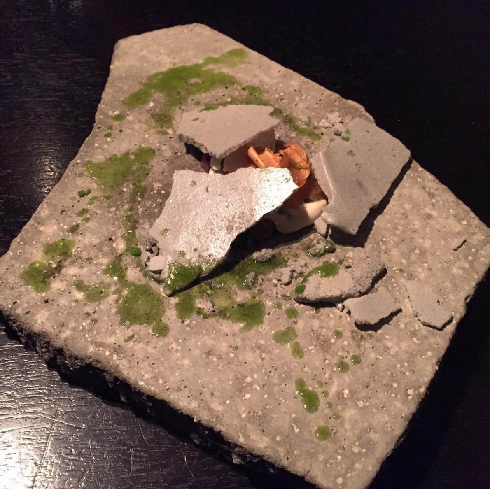The next plate was a pretty remarkable centerpiece—a black board with a pile of black logs, surrounded by a few sprigs of pine, and with a lovely black teapot on one end of the board. The waiter lit the fire, as well as the fire beneath the tea pot, then cut down the shisito peppers and orchids (remember?) from above the table, and placed the peppers on the fire. While the fire burned, we ate three small bites. Skewered on the pine branch was a beautiful piece of barbequed eel and a square of salted plum, dipped in sesame seeds (the subtle pine flavor was lovely). We also had a tiny piece of corn on the cob covered in super rich uni butter plus lime, dusted nori, and togarashi. It was all the joy of salted, buttered, corn on the cob but with some rich and subtle umami twists. Finally we ate a little sandwich with a chewy and salty seaweed on top, a creamy hamachi puree in the middle, and a cracker made from dried ice fish on the bottom (salty and crisp).
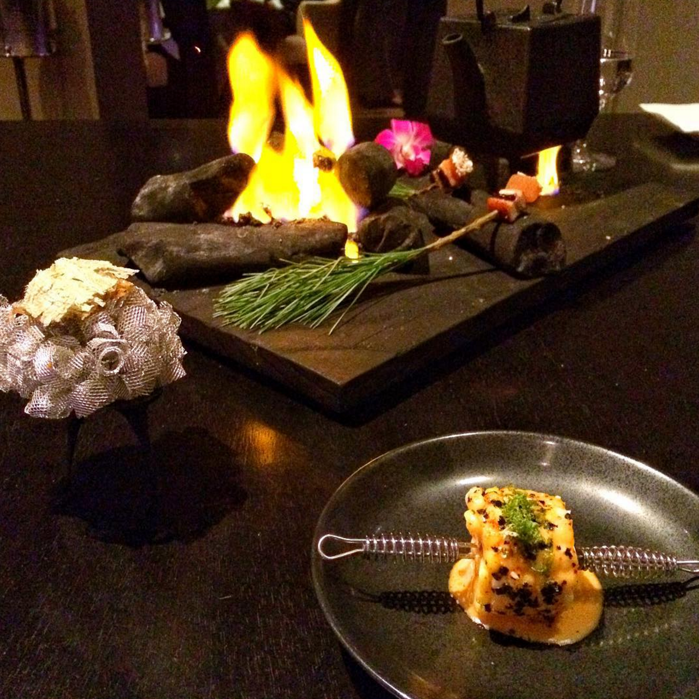Of course, there was more going on in that fire than met the eye. The next course was prepared tableside—our waiter pulled one of the "coals" out of the fire which turned out to be a blackened rectangle of pickled daikon. Another big log, buried deep in the fire, was chicken thighs wrapped in layers of kombu. On each plate, the waiter placed a half a roasted shisito pepper, a half an orchid, a thin slice of radish, and a chunk of chicken (which was amazingly tender and warmed up to around room temperature in the fire, it was infused with savory seaweed flavor, and also had a paste of nori on its surface). Also on the plate, there was a smoky piece of chicken liver dotted with a chicken fat aioli and a nasturtium leaf (an absolutely amazing bite) as well as a salad of deep fried thin strips of kombu and microgreens. Then the waiter poured a chicken dashi from the teapot onto each plate. The salad was mainly just a texture, which soaked up the incredibly rich and savory sauce.
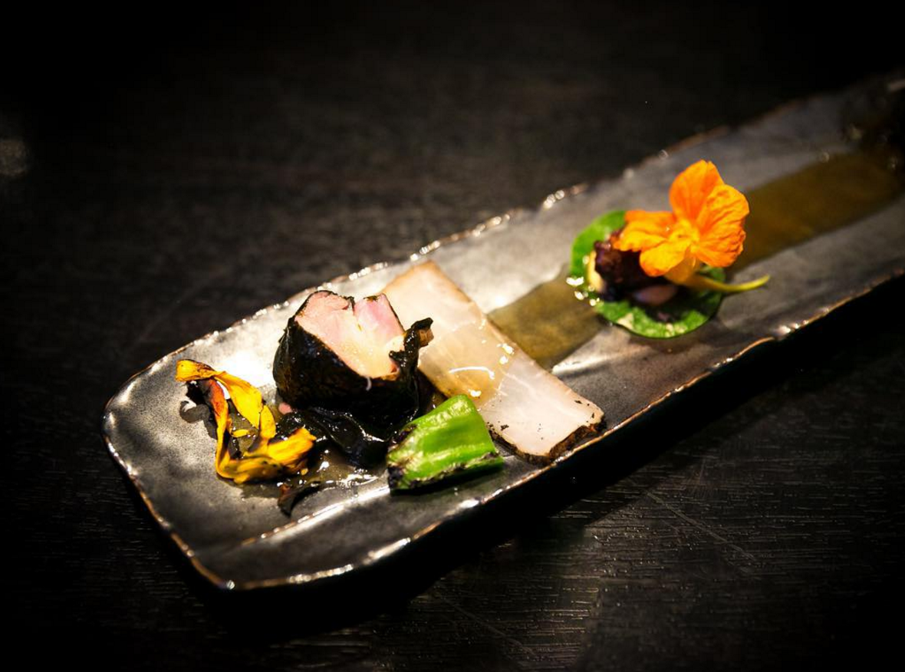The next course was flavors and smells of autumn. One bite (maybe tied for my favorite bite of the evening) was duck leg confit and a juicy chunk of persimmon and quince, all tempura fried and skewered on a oak twig with smoldering leafs. It was suspended in a nest of wires which kept everything crispy.
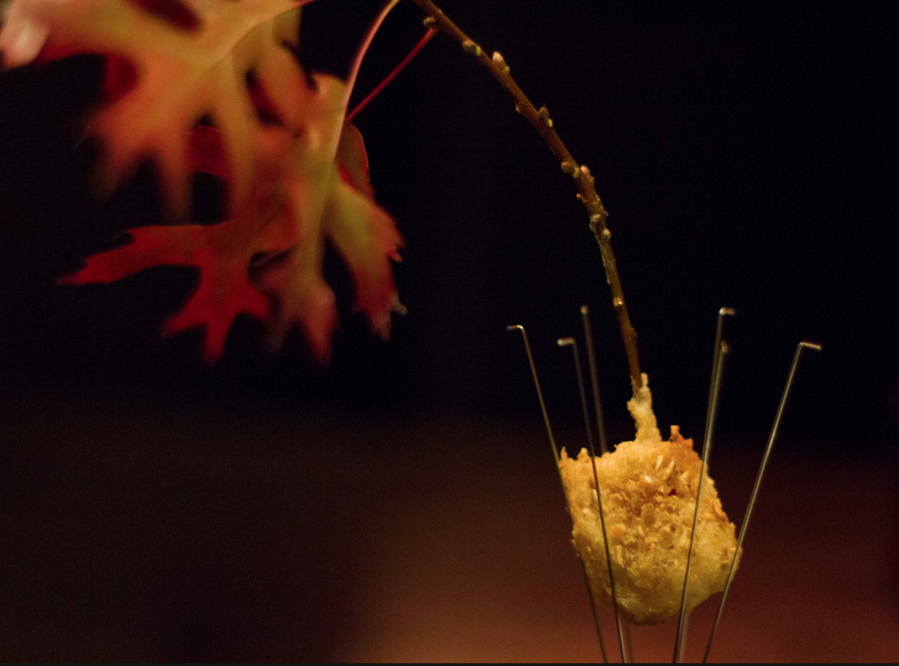The course also included an unbelievably rich chestnut soup with sage foam (it felt like intensely flavored cream, but light and thick and smooth) which was served in a bowl which could only be accessed using a straw (we were given metal straws the diameter of the ones used for bubble tea). On the rim of the bowl was a little boat of foie gras in a buttery pastry crust, with a gorgeous quince jelly on top, and a crunchy begonia leaf. We also ate two slices of cured duck breast, coated in pink peppercorn skins and grapefruit (and a few other things I'm forgetting), served on the giant pieces of cinnamon bark. It was the perfect balance of chewy and tender, and all those sundry flavors (and textures) just brought out more duck flavor, they didn't distract. When this course was served the dining room smelled amazing, between the charred cinnamon and the smoking oak leaves.
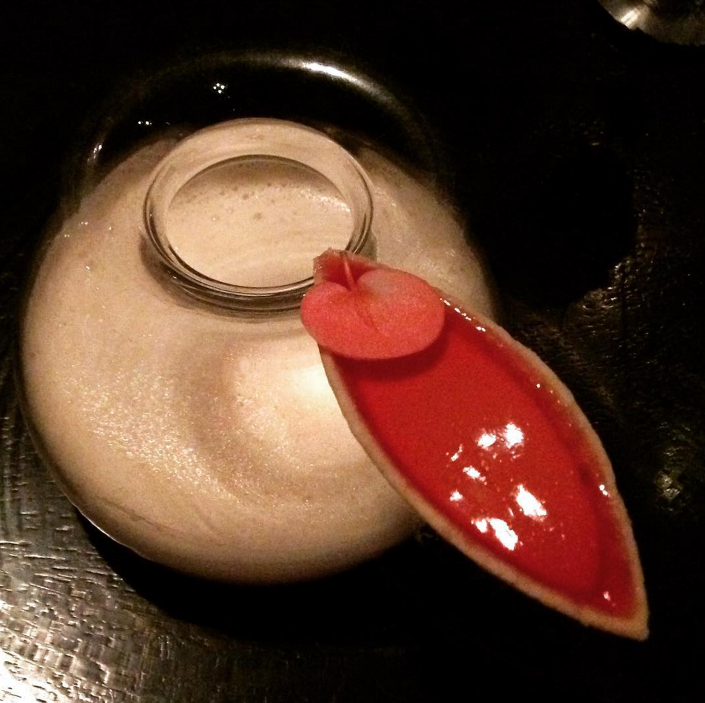Next was a dish called "hot potato cold potato", one of Alinea's signature dishes. It was a small, cold bowl of potato and truffle soup, served in a paraffin wax bowl. Suspended above the bowl, on a metal pin stuck through the side of the bowl, was a hot sphere of potato, topped with a hot slice of black truffle. Also skewered on the pin, there was a little cube of parmesan, a cube of butter, and a piece of chive. When we pulled the pins, the hot potato and garnishes dropped into the cold soup, then we quickly ate it all as a shot. It was so good, I just started giggling uncontrollably. A wonderful mix of textures and temperatures, all intensely truffled and rich. Unreal—the other tie for my favorite bite.
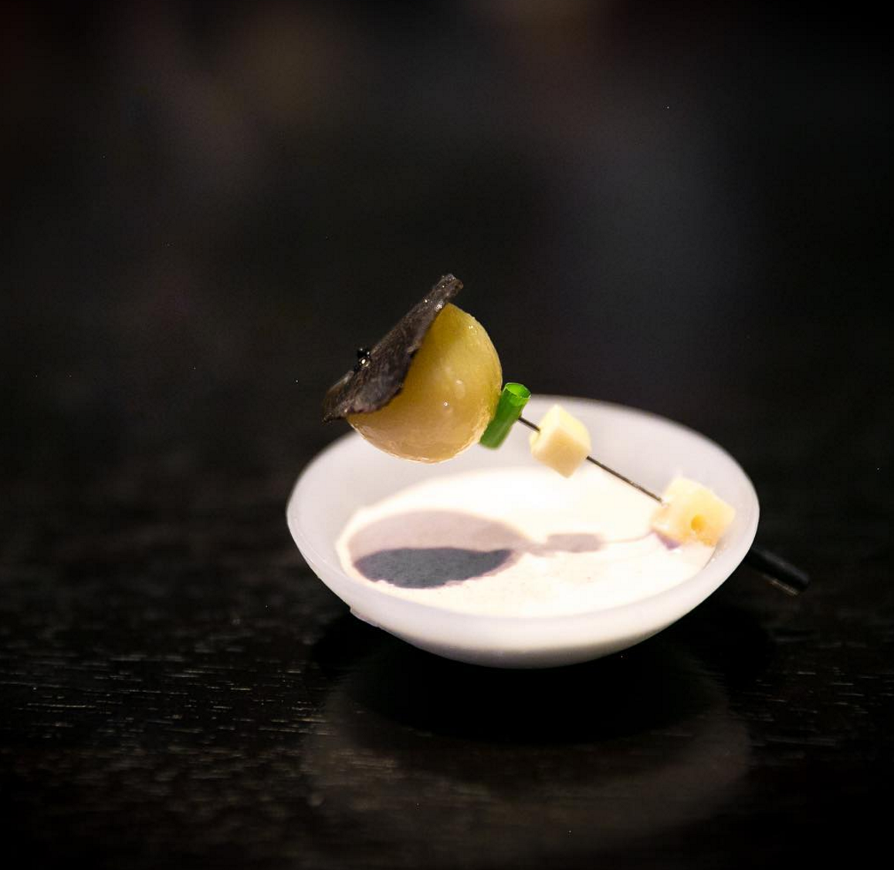The last savory dish of the night was a lamb course. First, the waiter brought out a huge centerpiece of lovely branches (maybe olive branches?), topped with four little ultra-fluffy olive oil cakes (they make them in the microwave, somehow). The lamb dish was so savory and so delicious. There were pieces of lamb sausage, lamb loin, pickled lamb tongue, and artichoke heart, topped with paper thin slices of olive, grape, and caper leaves. The sauces on the side were Marsala and garlic, I think? With oregano on top, and chopped dandelion greens underneath.
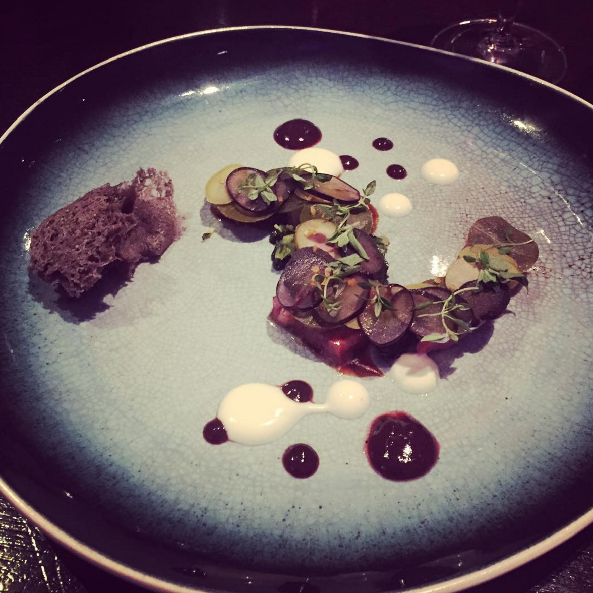The first dessert was a great transition between savory and sweet. We had a roasted parsnip (flavored with thyme, butter, and butter) topped with thin slices of black truffle. Then a bitter orange ice cream (with a pudding like texture), topped with frozen pieces of vanilla ice cream and cocoa nib ice cream. What looks like powdered sugar on top was "honey granules", the texture of powdered sugar but an intense honey flavor.
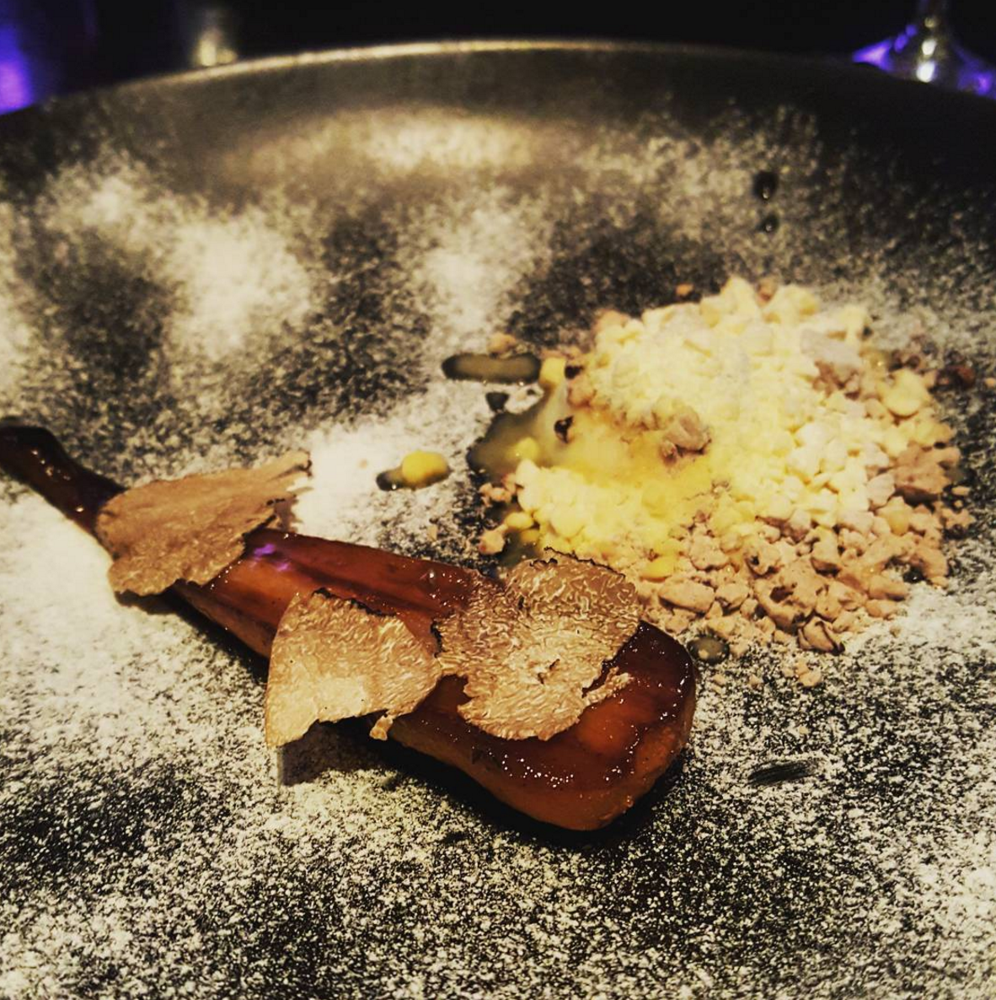The second dessert was pretty cool. It was helium balloons, but the whole thing (string and balloon) was edible! We bit it and inhaled the helium and Natalie's voice got all squeaky. The taste wasn't anything special (something like an apple jolly rancher) but it was so fun!
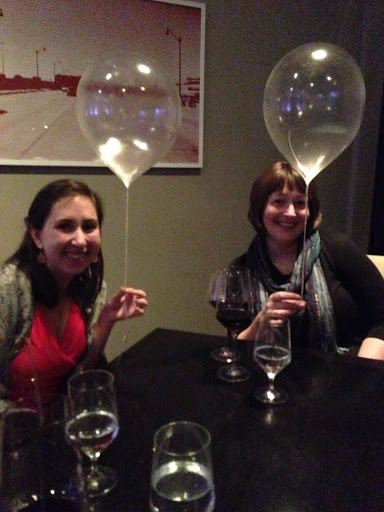The final dessert was absolutely spectacular. They cleared our table, and laid out a thin rubber sheet. Then one of the chefs came out and plated the dessert in front of us. First, he laid down three sauces in beautiful patterns—allspice, rum vanilla, and mango. Then we placed a variety of little tropical fruit bites in front of each of us: a intense and delicious kefir lime chew (with edible wrapping paper), a cube of compressed watermelon, a banana flavored Swiss meringue (like the best banana runt ever), a crunchy-chewy-soft piece of crystalized pineapple, a cube of dragon fruit, a piece of guava cut in a neat polyhedron (close to a dodecahedron, although one face was a hexagon I think), and passion fruit gellée, served in the passion fruit skin, with the seeds (guess who loved that one). Finally, he placed two big white spheres on the table (they were frozen coconut, which got chewier as it cooled, maybe some kind of meringue?), topped them with a few thin slices of chocolate, then sprinkled some lychee glitter over the entire table. He took a spoon, hit the coconut spheres causing them to shatter into lots of little pieces, then we ate!
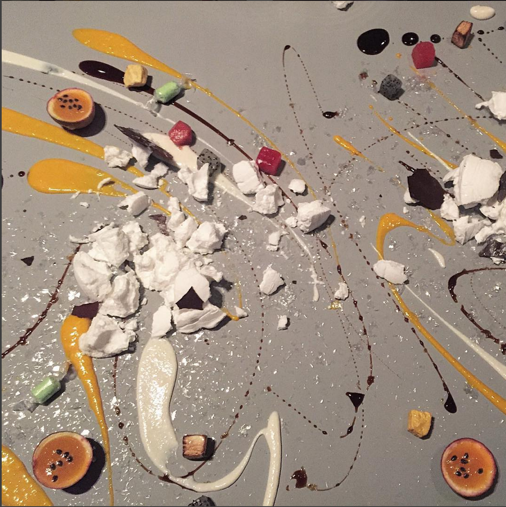Just an absolutely stupendous meal, one we will never, ever forget.